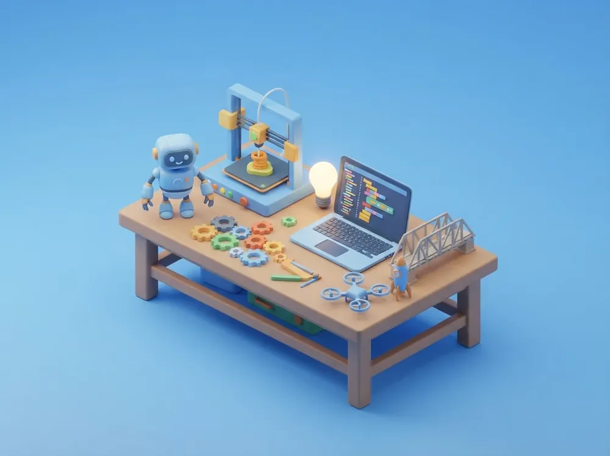

Les ponts
Ponts, barrages, tours : pourquoi ça tient debout ? Forces, triangulation et inspection d'ouvrages.
- VidéoC'est pas sorcier : les ponts
- Évaluation des sorciers
- Cours
- TPTP Ponts
- Kahoot
- Évaluation sur PC
- Autres ressourcesPont papier
Choisis ton niveau, ouvre ta séquence et suis le parcours : on découvre, on manipule, on s’entraîne en jouant, puis on montre ce qu’on sait.

Ponts, barrages, tours : pourquoi ça tient debout ? Forces, triangulation et inspection d'ouvrages.
Sources, chaînes d'énergie et mix électrique : alimenter une ville sans blackout ni excès de CO₂.
Esquisse cotée, bossage, enlèvement de matière : modéliser une pièce en 3D et connaître sa masse avant de la fabriquer.
Sprites, événements, score et vies : des blocs comme sur MakeCode Arcade, puis ton propre jeu sur le vrai MakeCode.
Les trois piliers, les cinq étapes de la vie d'un produit et l'éco-conception : réduire l'impact d'un objet, de la mine à la poubelle.
Cinq familles, quatre catégories de propriétés : comprendre pourquoi un objet est en métal, en polymère ou en composite — et savoir le justifier.
Lignées, invention et innovation : du grand-bi au smartphone, pourquoi et comment les objets changent.
Bête à cornes, fonctions d'usage et d'estime, critères et niveaux : formuler le besoin et contrôler un prototype.
Fichiers, dossiers, serveur du collège, sessions et tailles Ko/Mo/Go : ne plus jamais perdre un exposé.
La poignée qui épouse la main, la porte de Norman, la chaise aux bonnes mesures : penser comme un designer.
Quatre familles, des critères pour choisir (temps, CO₂, capacité) et la multimodalité : décoder le système qui déplace le monde.
Fonction d'usage, fonctions techniques, solutions : 200 pièces pour apprendre à analyser n'importe quel objet — transmission et freinage compris.
Le château d’eau et sa pression venue de la gravité, le circuit complet de la rivière à la rivière, la station d’épuration et la chasse aux fuites.
Les quatre capteurs de la station, la chaîne complète de la prévision (mesurer, transmettre, calculer, diffuser), le baromètre qui annonce la pluie et la chasse aux capteurs menteurs.
Capteurs, actionneurs et logique SI/ALORS : la maison connectée décortiquée et programmée.
Engrenages, courroies, pignon-crémaillère : sens de rotation et rapports N₂ = N₁ × Z₁ ÷ Z₂.
Alimenter, distribuer, convertir, transmettre : le voyage de l'énergie dans le vélo électrique, rendement et pertes compris.
La chaîne numérique : modéliser par volumes, exporter en STL, trancher en couches, imprimer — et diagnostiquer les ratés.
Switch, box, serveur, adresses IP : comprendre le réseau local et diagnostiquer les pannes de proche en proche.
Vues, cotes, échelle, cartouche : le langage universel qui transforme une idée en pièce fabricable, sans ambiguïté.
Portance, poids, traction, traînée : le duel des forces, l'aile qui fabrique la portance et les trois gouvernes du pilotage.
Distance d'arrêt, sécurité active et passive, la ceinture face à l'inertie : la technologie qui garde les occupants en vie.
200 g, 60 matériaux : l’écorché du téléphone, la grille invisible de l’écran tactile, la batterie pièce d’usure et le réflexe réparer plutôt que jeter.
Le secret du contrepoids qui soulage le moteur, le parachute d’Otis (1854), l’armoire qui choisit quel appel servir, et la maintenance préventive qui rend l’ascenseur si sûr.
Bit, octet et poids des bits, puis tous les « dialectes » du binaire : hexadécimal, code ASCII, couleurs RVB, DCB et code Gray.
Un jeu qui mémorise, décide et répète : du tunnel au casse-briques complet, puis un jeu à niveaux sur MakeCode.
Lire un vrai plan, modéliser sur plusieurs faces, calculer une masse, corriger un modèle et suivre un cahier des charges.
Chaîne d'information, capteurs et programmation : du robot suiveur de ligne à la gestion d'entrepôt.
Paquets, routeurs, DNS, chiffrement : le voyage des données — et comment les défendre.
ACV, économie circulaire, éco-conception : la vie cachée des objets, du minerai à la borne de recyclage.
Variables, conditions, boucles : lire un programme, prévoir sa sortie et traquer les bugs — objectif brevet.
Découper en fonctions, ranger des données dans des listes et programmer gravité, poursuite et états du jeu.
Pièces mécaniques, simulation de résistance, mécanisme bielle-manivelle et projet d’optimisation.
Capteurs, actionneurs, voyage de la donnée jusqu'au cloud et boucles automatiques — sans oublier la vie privée.
Casser des ponts dans l'ordinateur : modèle, simulation, coefficient de sécurité… et l'essai réel qui prouve.
Données étiquetées, entraînement, prédiction, biais : comment une machine apprend — et pourquoi on ne la croit jamais les yeux fermés.
Action-réaction, l'orbite comme chute permanente, le GPS décodé et les débris spatiaux : l'espace que tu utilises 50 fois par jour.
La prothèse sur mesure du scan à l’impression 3D, le pacemaker chaîne d’information dans le corps, l’imagerie qui voit sans ouvrir.
La balance des 50 Hz et le pic de 19 h, une journée du mix électrique, le smart grid qui ne gaspille rien : produire, transporter, stocker et piloter la plus grande machine du monde.
S’entraîner à l’épreuve : des documents à lire — plans cotés, tableaux de données, caractéristiques techniques — puis des questions qui s’appuient dessus. 25 points, 30 minutes, correction à la remise.
Calculer une expression, réduire, simple et double distributivité, signe moins, (a + b)², factorisation et a² − b². Neuf animations sur des rectangles d’aires, un simulateur et un vérificateur. TP de 9 missions avec mini-cours sur les exercices difficiles.
Station abandonnée, 12 énigmes, 60 minutes et une seule chance. Transmission mécanique, loi d'Ohm et loi des mailles, diagramme d'états SysML, lecture de plan, chaîne d'énergie, algorigramme, programmation en blocs, code ASCII : tout le programme y passe. Chaque énigme donne un code, et le dernier ouvre la capsule d'éjection.
Le robot du professeur a subi une surtension : 7 systèmes à réparer en 25 minutes. Lecture de schéma, outils et leur usage, calcul d'engrenages, ordre d'une procédure, électronique de base, programmation par blocs et chaînes d'énergie et d'information. Chaque système restauré livre un chiffre du code final, plus quatre mini-jeux bonus.
Activité sur la perceuse : constitution, usage et sécurité. Les résultats remontent sur le nœud Firebase resultats_perceuse .
Jeu de production incrémental : on fait tourner une ligne d'usinage, poste après poste. Pour acheter une machine il faut d'abord passer son habilitation — lire la fiche du procédé, puis réussir le quiz. Neuf habilitations à décrocher, qui couvrent les grandes familles de procédés : enlèvement de matière, déformation, moulage, addition de matière et assemblage.
Jeu de survie où les armes tirent seules : l'élève esquive et collecte. À chaque montée de niveau, une question du brevet ; toutes les deux minutes, un exercice de technologie qui améliore une arme ; à la mort, une seconde chance si la réponse est bonne. Un mode classe permet au professeur d'invoquer les menaces, que seuls les exercices résolus repoussent.
S’entraîner à l’épreuve écrite : diagramme des exigences, chaîne de puissance et relevés à exploiter, puis trois parties — analyser le besoin, modéliser, valider les performances. 20 points, correction à la remise.
Conception de produits industriels : dessin d’ensemble et nomenclature, analyse des liaisons, cotation fonctionnelle et chaîne de cotes, dimensionnement en flexion et durée de vie des roulements. 60 points, 3 h.
Potence murale : calcul de RdM et simulation par éléments finis (Von Mises), dimensionnement de la section, choix du matériau par indice de performance, concentration de contraintes en coupe, dessin de définition avec coupe A-A.
Séquence complète : le cours de méthode, un TP de six missions chiffrées, puis le sujet type — modélisation cinématique, inertie équivalente, dimensionnement dynamique, choix sur catalogue et exploitation pédagogique .
Le pilier de l’écrit : modéliser une action, compter les inconnues, choisir l’isolement et résoudre. Cours de méthode, six cas chiffrés, puis un sujet type complet sur une grue d’atelier hydraulique.
Train ordinaire, puis train épicycloïdal et formule de Willis. Cours de méthode avec simulateur de denture, six cas chiffrés, puis un sujet type complet sur un treuil de levage à deux vitesses.
Flexion, torsion, contrainte équivalente et surtout concentration de contraintes — l’oubli qui fait rompre les pièces au congé. Cours de méthode avec simulateur, six cas chiffrés, puis un sujet type complet sur un arbre de réducteur à deux sections singulières.
La cote condition, le tracé des chaînes de cotes, les valeurs extrêmes et la répartition des tolérances. Cours de méthode avec simulateur, puis six cas chiffrés — jeux extrêmes, répartition des tolérances, chaîne longue et ajustement normalisé.
Tolérances de forme, d’orientation et de position, cadre et zone de tolérance, système de références, maximum de matière — et surtout le choix de conception qui les justifie. Simulateur : la même pièce refusée puis acceptée au maximum de matière.
Bielle-manivelle : loi entrée-sortie, vitesse d’un point, équiprojectivité et centre instantané de rotation. Simulateurs animés de la position du piston et des deux constructions graphiques.
Liaisons normalisées, graphe des liaisons, degré d’hyperstatisme h = m − Nc + 6γ et conditions géométriques associées. Simulateur : un arbre sur deux paliers, avec défaut d’alignement et dilatation.
Types de roulements, règles de montage, charge équivalente P = XFr + YFa et durée de vie L10. Simulateurs : dilatation d’un arbre, durée de vie en fonction de la charge.
Lois de Coulomb, cône de frottement, couple d’un embrayage et relation d’Euler pour les courroies. Simulateurs : plan incliné, embrayage, courroie.
Principe fondamental en translation et en rotation, moment d’inertie, démarrage et freinage, levage. Simulateurs : chariot, course disque contre anneau, démarrage d’un moteur.
Puissance, chaîne des rendements, énergie cinétique, inertie ramenée et couple de démarrage. Simulateurs : flux de puissance avec pertes, inertie vue à travers un réducteur.
Pression, principe de Pascal, vérin double effet, débit et puissance hydraulique, choix entre huile et air comprimé. Simulateurs : presse de Pascal, vérin animé.
Essai de traction, indices de performance, carte des matériaux, familles de procédés. Simulateurs : essai animé, tirants comparés, carte module-masse volumique.
Vues et correspondances, types de traits, construction d'une coupe, règles de hachures, cotation et nomenclature — sur un palier lisse en plan normalisé et en perspective 3D.
Identifier le mouvement de chaque pièce d'un mécanisme, puis tracer à la main la trajectoire d'un point : rotation, translation rectiligne, translation circulaire, mouvement plan quelconque.
Visionneur 3D intégré : arborescence IFC, propriétés, systèmes, mesures et coupes. Chaque TP se termine par un document réponse : schéma de principe et fiche technique.
Chaufferie fioul extraite d’une vraie maquette Revit : explorer, identifier, mesurer, compléter le schéma. Chaque aide utilisée retire 0,5 point. Note envoyée au tableau de bord.
Séance courte de 10 minutes, à faire régulièrement : vocabulaire technique syllabe par syllabe, mémoire visuelle d'un schéma vu en un éclair, et tenue d'une cadence régulière. La difficulté s'adapte automatiquement au niveau de chaque élève, et la progression est conservée d'une séance à l'autre.
Un train sans volant ni capteur qui prend les virages et se recentre tout seul : la conicité des roues, l auto-centrage, le mouvement de lacet et le vrai role du boudin. Avec simulateur de decalage lateral.
Douze objets du quotidien - fermeture eclair, serrure a goupilles, chasse d eau, differentiel, thermostat, ecran tactile - et les concepts de technologie que chacun permet de construire.
Chaque évaluation enregistre automatiquement les résultats (note /20, durée, détail par activité) et embarque un tableau de bord protégé par mot de passe avec export CSV — accessible depuis le bouton discret en bas de page de chaque évaluation. Les TP sauvegardent la progression des élèves sur le poste (localStorage) et délivrent en mission finale le code de déverrouillage des deux jeux : la révision devient une récompense. Tous les fichiers sont autonomes et fonctionnent hors-ligne — seules les évaluations nécessitent Internet pour la remontée des résultats.
Tableau de bord — toutes les évaluations résultats consolidés des 30 séquences, filtres par niveau, classe et élève, export CSV global
Suivi des classes — avancement des séquences où en est chaque classe : un clic par séquence pour marquer à faire, en cours ou terminé, avec filtres et export CSV
La séquence Sciences de l'ingénieur inaugure une nouvelle génération d'activités : plus aucun QCM, des exercices à saisie libre, à calcul ou à tracé, avec validation globale — aucune réponse n'est dévoilée avant la fin, et le barème décroît à chaque essai (3 étoiles au premier, 2 au deuxième, 1 ensuite). Les plans sont dessinés aux normes ISO et accompagnés de perspectives d'ensemble, éclatée et en demi-coupe.
Le portail retient ce qui est ouvert pour savoir où la classe en est.